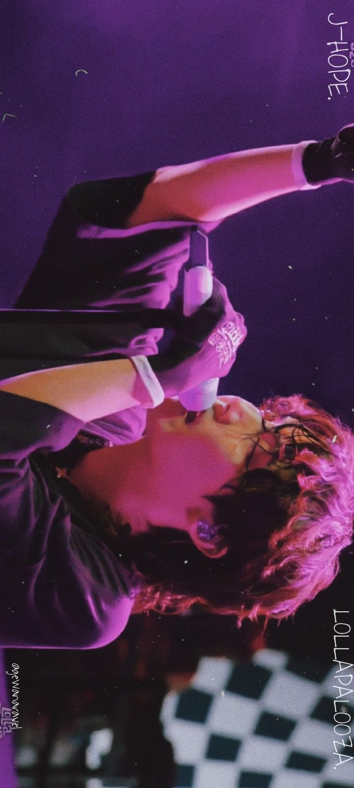
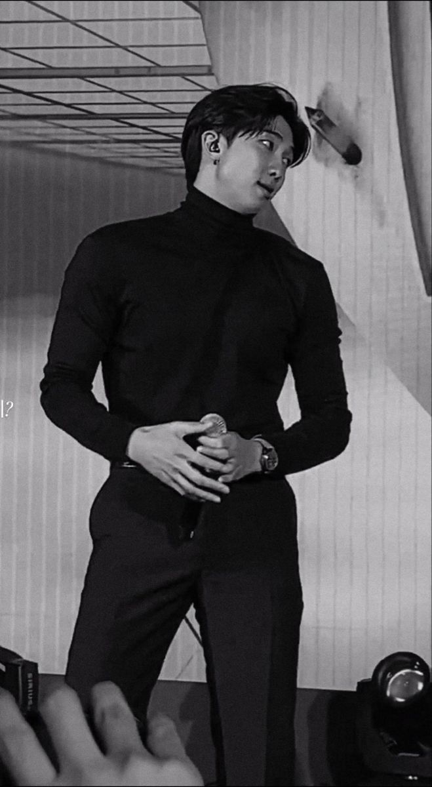
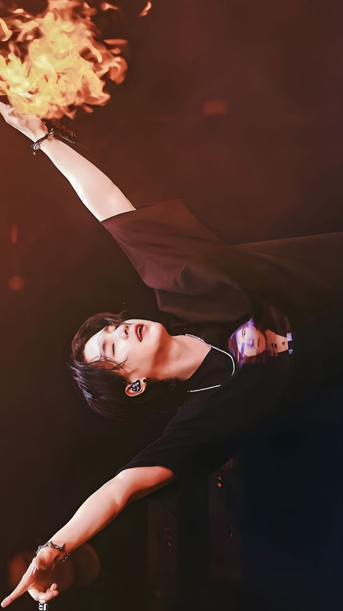
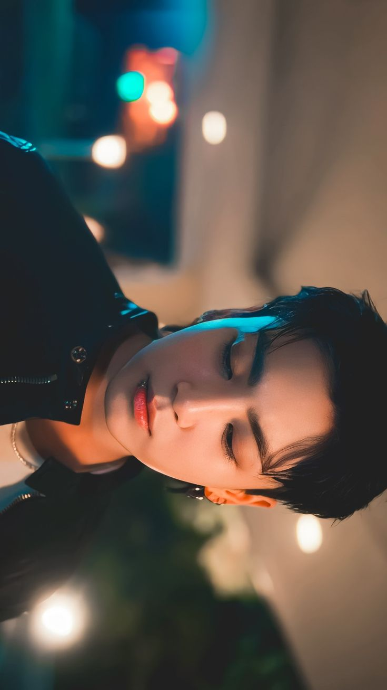

1. Jin (The Astronaut)
MMA (Melon Music Awards) 2022:
Jin won the Best OST award for his solo song The Astronaut, which he released with Coldplay.
The Astronaut's Chart Performance:
The song was widely recognized on global charts, and it achieved high rankings on the Billboard Hot 100 and iTunes charts.
2. J-Hope (Jack In The Box)

MMA 2022:
J-Hope received recognition for his solo album Jack In The Box and its tracks.
Billboard Music Awards 2023:
J-Hope was recognized in the Top Social Artist category as a solo artist.
MTV Video Music Awards 2023:
J-Hope was nominated and received attention for his solo tracks from Jack In The Box.
3. RM (Indigo)

MAMA Awards 2023:
RM's album Indigo won several accolades, including Best Solo Artist.
Billboard 200 Chart:
Indigo peaked high on global charts, reflecting the impact of his solo album.
MMA 2023:
RM was nominated and received recognition for his solo achievements with Indigo.
4. Suga (Agust D - D-DAY)

Billboard 200:
Suga’s D-DAY album debuted at #2 on the Billboard 200 and topped charts around the world. MMA 2023: He received recognition for D-DAY, including a Best Solo Performance award for tracks like Haegeum and Snooze. Korean Music Awards 2023:
Suga won awards for D-DAY in categories such as Best Album and Best Solo Artist. MTV Europe Music Awards 2023: Nominated for Best Korean Act as part of his solo success.
5. Jimin (Face)

Billboard Music Awards 2023:
Jimin was awarded Top Social Artist and recognized for his solo work. MMA 2023: Like Crazy became one of the biggest hits, winning multiple awards for Best Solo Performance. MAMA Awards 2023: Jimin was awarded Best Solo Artist for his album Face and Best Song for Like Crazy.
6. V (Layover)

MAMA 2023:
V’s album Layover won Best Solo Performance and Best Male Solo Artist. Billboard: V's Layover album performed very well on the charts and made notable appearances globally. MMA 2023: V was nominated for Best Solo Album with Layover.
7. Jungkook (Golden)

Billboard Music Awards 2023: